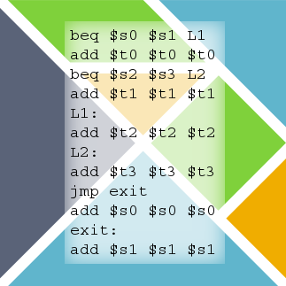
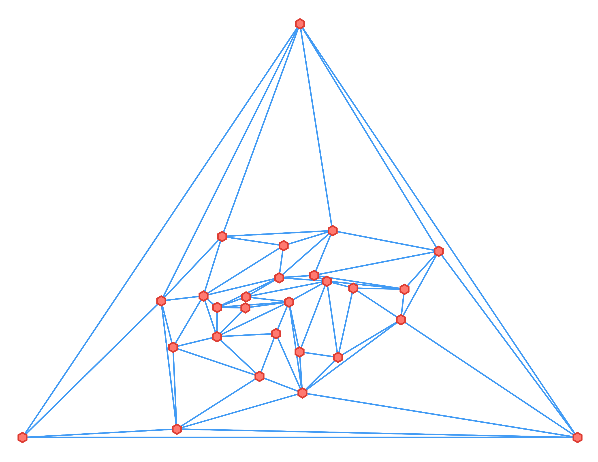

Basic Elm Language MIPS Assembler [Source]
For our final project Chris Phifer and I implemented a MIPS assembler using the Elm programming language (a compile-to-JavaScript ML-like language with a strong static type system).
Binary Search Tree Visualization & Analysis Toolkit

This utility, which I and Matt Asnes created in Spring of 2017, provides a framework and a series of tools for analysis of various BST algorithms, and provides an interface for creating and testing others.
Kirkpatrick Point Location in Python
Matt Asnes and I created a library in Python for running the Kirkpatrick point location algorithm. The goal of point location is to determine, given a point and a set of polygons, like a map, which polygon the given point is inside. The Kirkpatrick algorithm builds an expensive data structure based on the polygons which can then be cheaply queried many times.